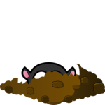
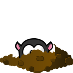
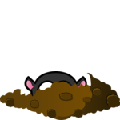
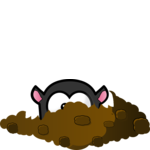
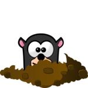
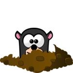

Анимация по етапи¶
Светофар¶
Един от най-известните примери за устройство, което работи на етапи, е светофар. В примера на светофара ще обясним работата по етапи и как можем да анимираме събития, които се провеждат поетапно на компютър.
Има няколко състояния, в които може да бъде светофар. Например, тя може да показва червена светлина, мигаща жълта светлина, да бъде изключена и т.н. Ще наречем период, през който светофарът не променя състоянието си етап. При нормална работа на светофара, етапите се редуват циклично и всеки етап има собствена продължителност. Например вземете светофар, за който се редуват следните четири етапа: 1 - червена светлина, 2 - червена и жълта светлина, 3 - зелена светлина и 4 - жълта светлина.
За да направим анимацията по-проста, ще изразим продължителността на всеки етап в броя на кадрите (вместо секунди). Нека продължителността на посочените етапи да бъде \(n_1\), \(n_2\), \(n_3\) и \(n_4\) кадрите съответно. Тогава целият цикъл продължава \(N = n_1 + n_2 + n_3 + n_4\) кадри. От тях \(N\) кадри, първият \(n_1\) принадлежат към първия етап, следващият \(n_2\) към втория етап и т.н.
За да знаем към кой етап принадлежи текущият кадър, можем да въведем глобална променлива, която ще брои кадрите. Тъй като целият цикъл трае \(N\) кадри, достатъчно е да се брои по модул \(N\). Това означава, че когато броячът на кадрите достигне стойността \(N-1\), следващата стойност е нула (отчитаме само в рамките на един цикъл). В този случай, за стойности от 0 до \(n_1 - 1\), кадърът принадлежи към първия етап, за стойности от \(n_1\) до \(n_1 + n_2 - 1\) към втория етап , за стойности от \(n_1 + n_2\) до \(n_1 + n_2 + n_3 - 1\) до третия етап, а за стойности от \(n_1 + n_2 + n_3\) до \(N -1\) до четвъртия етап.
Ето как може да изглежда програмата, базирана на тази логика:
Задачи¶

Етап пети: Копирайте предишната програма, след това поставете етап за мигаща зелена светлина, след зелената светлина и преди жълтата светлина (както е показано в примера - бутон “Play Task”).
Съвет: В петата фаза няма да имаме нито едно обаждане към функцията draw_trafficlights, а по-скоро парче код, което изглежда така:
if i_frame % 2 == 0:
draw_trafficlights(...)
else:
draw_trafficlights(...)
Самолет: Напишете програма, която работи, както е показано в примера (бутон „Play Task“).
Описание на движението: равнината започва от центъра на левия ръб на прозореца. Първо се движи за 20 кадъра 2 пиксела надясно и нагоре, след това 20 кадъра 2 пиксела надясно и надолу. Когато излезе през десния ръб на прозореца, той се появява на същата височина в левия ръб. Скоростта на кадрите е 50 кадъра в секунда.
{kind=link}

Къртица Напишете програма, която работи както е показано в примера (бутон „Play Task“).
10 изображения се зареждат с къртица, излизаща от дупката малко повече във всяко изображение. Цикълът има четири етапа с общо 28 кадъра.
Етап първи трае 10 кадъра и по време на този етап къртицата излиза от дупката (изображенията са показани в ред, от първи до десети).
Етап втори продължава 5 кадъра, през които къртицата е в най-високото положение (показано е десетото изображение).
Етап три трае 10 кадъра и по време на този етап къртицата влиза в дупката (изображенията се показват от десето до първо място).
Етап четири трае 3 кадъра и по време на него къртицата е в дупката (показано е първото изображение).

 



{kind=link}
{kind=link}

 

{kind=link}